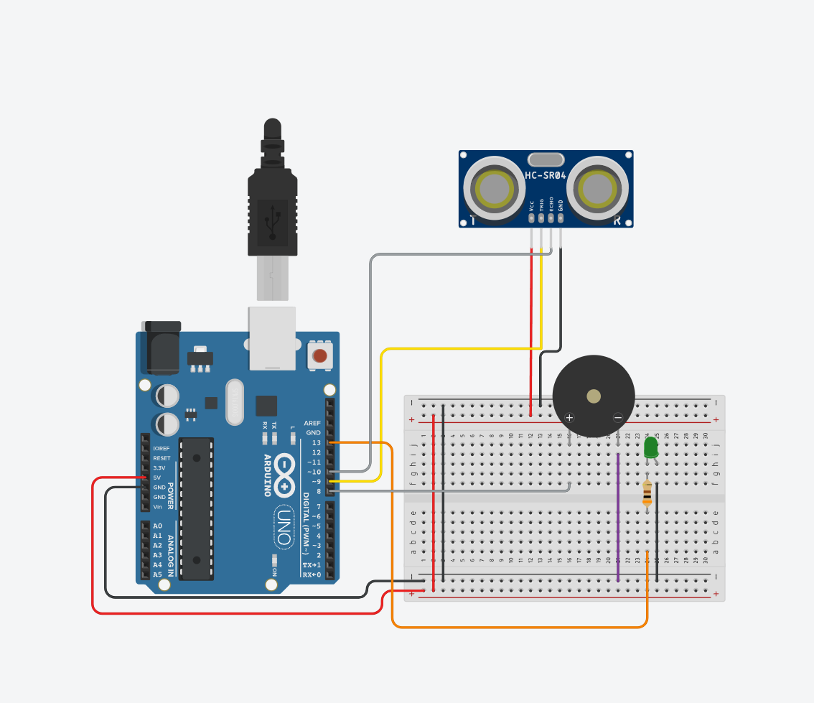

Descrição do Projeto
O projeto AlarMINI surge da motivação de desmistificar a robótica e
provar que soluções de segurança eficazes podem ser construídas por
qualquer pessoa, mesmo as pessoas que estão começando agora com
Arduino.
O nosso objetivo principal é desenvolver um protótipo ideal de sistema
de segurança residencial baseado em sensores de movimento.
O projeto se contextualiza na área de Educação Maker e Prototipagem de
IoT, servindo como um guia prático e inspirador para iniciantes
superarem a barreira inicial da programação e aplicação de hardware
básico.
Esquema Conceitual do AlarMINI:
Palavras-chave
Passo a passo da montagem
Conecte os componentes nas portas digitais do Arduino conforme abaixo:
1. ENERGIA:
Conecte os pinos 5V e GND do Arduino à Protoboard.
2. SENSOR HC-SR04:
- TRIG (Gatilho) -> Porta Digital 9
- ECHO (Receptor) -> Porta Digital 10
- VCC e GND do sensor devem ser conectados à Protoboard.
3. BUZZER ATIVO:
- Pino Positivo (+) -> Porta Digital 8
- Pino Negativo (-) -> GND
4. LED VERDE:
- Pino Positivo (Anodo) -> Porta Digital 13
- Pino Negativo (Catodo, COM RESISTOR DE 300 OHMS) -> GND
IV. CONFIGURAÇÃO DO CÓDIGO (SOFTWARE)
1. Baixe o arquivo AlarMINI.ino e abra-o na Arduino
2. Faça o Upload do código para a placa Arduino Uno.
AJUSTE DE SENSIBILIDADE: Para alterar a distância de disparo,
modifique o valor da variável limiarAbertura no código: int
limiarAbertura = 15; // Ajuste este valor em centímetros.
Componentes e suprimentos
| Componente | Quantidade | Função | Código de Referência Comum |
|---|---|---|---|
| Arduino Uno | 1x | Microcontrolador principal. Processa o sinal do HC-SR04 e controla o Buzzer e o LED. | Placa base Arduino Uno |
| Sensor Ultrassônico HC-SR04 | 1x | Sensor de distância. Emite e recebe pulsos ultrassônicos para detectar a abertura da porta. | HC-SR04 |
| Buzzer Ativo | 1x | Dispositivo de saída sonora. Emite o som de alarme quando a distância excede o limite. | Buzzer Ativo |
| LED Verde | 1x | Sinalizador visual (pino 13). Acende quando o alarme está ativo. | LED Verde 5mm |
| Resistor de 300 Ohms | 1x | Componente de segurança para limitar a corrente que passa pelo LED Verde. | 300 Ohms |
| Protoboard | 1x | Placa de ensaio para montagem temporária e sem solda do circuito. | 400 ou 830 pontos |
| Cabo USB para Arduino | 1x | Fornece alimentação e permite o upload do código para o Arduino. | Cabo USB Tipo A/B |
| Jumpers (Fios de Conexão) | Variável | Fios utilizados para conectar os pinos do Arduino aos componentes na Protoboard. | MM / MF / FF |
Aplicativos e Plataforma
- DigArduino.ai
- Tinkercad
- Draw.io
Códigos:
1.Definição de Variáveis e Pinos
O código a seguir é a definição de variáveis e pinos do sistema de alarme:
const int trigPin = 9;
const int echoPin = 10;
// --- PINOS DO ALARME ---
const int ledPin = 13;
const int buzzerPin = 8;
const int buttonPin = 7;
// --- VARIÁVEIS DO SISTEMA ---
long duracao;
int distancia;
int distanciaNormal = 10;
int limiarAbertura = 15; // Se ficar MAIOR que este valor, porta abriu
bool alarmeAtivado = false;
\Pinos (9, 10, 13, 8)/
- Sensor Ultrassônico (9 e 10): Define os pinos para emitir (`trigPin`) e receber (`echoPin`) o pulso sonoro para medir a distância.
- Atuadores (13 e 8): Define as saídas para o LED e o Buzzer (sinais visuais e sonoros).
\Variáveis de Controle/
- distancia e duracao: Armazenam os dados da medição do sensor.
- limiarAbertura = 15;: O valor chave para o alarme. Se a distância medida for **maior que 15 cm**, o alarme é disparado.
- alarmeAtivado: Uma flag booleana para controlar o estado atual do alarme.
2.Função de Medição de Distância
Responsável por comunicar-se com o sensor HC-SR04 para obter o valor da distância em centímetros.
int medirDistancia() {
// Limpa o trigPin, envia o pulso e calcula a distância
digitalWrite(trigPin, LOW);
delayMicroseconds(2);
digitalWrite(trigPin, HIGH);
delayMicroseconds(10);
digitalWrite(trigPin, LOW);
duracao = pulseIn(echoPin, HIGH);
// Cálculo: Tempo * Velocidade do Som (0.034 cm/µs) / 2 (ida e volta)
return duracao * 0.034 / 2;
}
A função envia um pulso pelo pino Trig (9), usa o pulseIn() para cronometrar o tempo de retorno do som pelo pino Echo (10) e converte esse tempo em centímetros para determinar a distância até o objeto.
3.Função Loop (loop)
Esta função executa a leitura da distância, verifica o botão de reset e decide se o alarme deve ser ativado ou desativado.
void loop() {
distancia = medirDistancia();
Serial.print("Distância: ");
Serial.print(distancia);
Serial.println(" cm");
// Se a distância estiver perto da parede → NÃO apitar
if (distancia <= limiarAbertura) {
digitalWrite(buzzerPin, LOW);
noTone(buzzerPin);
digitalWrite(ledPin, LOW);
alarmeAtivado = false;
}
// Se a distância estiver longe → APITAR
else {
if (!alarmeAtivado) {
Serial.println("⚠ Porta abriu! Distância aumentou → ALARME!");
alarmeAtivado = true;
}
digitalWrite(buzzerPin, HIGH);
tone(buzzerPin, 500);
digitalWrite(ledPin, HIGH);
}
delay(150);
}
O loop() lê a distância e usa a variável limiarAbertura (15 cm) para a decisão. Se a distância for maior que o limite, ele ativa o Buzzer e o LED. Caso contrário, desliga tudo.
Download do AlarMINI
Baixe o arquivo ZIP completo do projeto...
Tutorial em vídeo
Problemas ao decorrer do processo
O que deu errado?
O principal desafio foi a interferência da luz ambiente. O sensor LDR
é projetado para medir a intensidade de luz. Mesmo com a barreira do
laser ativa, a luz externa da sala ou do ambiente era forte o
suficiente para ser captada pelo LDR, registrando o estado como
"alarme desativado", (mesmo com o laser presente) o tempo todo. Isso
impedia que o sistema detectasse a interrupção do feixe (a ativação do
alarme) de forma confiável.
Como foi resolvido?
Após tentativas frustradas de isolamento e com o auxílio de
professores, a equipe decidiu mudar radicalmente a abordagem de
detecção. O sistema foi migrado para um sensor de proximidade
ultrassônico (HC-SR04). Este sensor não utiliza luz, mas sim ondas
sonoras para medir distâncias. A lógica foi invertida: o sensor
identifica um objeto a uma distância segura (ex: parede próxima) e o
alarme é acionado apenas quando este objeto se afasta (indicando que o
objeto foi movido, ou que houve uma mudança na área monitorada). Essa
mudança resolveu o problema de interferência luminosa e funcionou
melhor do que o esperado.
Lições aprendidas:
A principal lição que a equipe aprendeu é que a dedicação e
persistência são cruciais, especialmente ao enfrentar falhas técnicas.
O processo demonstrou a importância crítica da validação de
componentes no ambiente real de aplicação, como evidenciado pela
interferência luminosa no sensor LDR. Assim, a maior lição foi a
necessidade de adaptabilidade: a capacidade de mudar rapidamente para
o sensor ultrassônico (HC-SR04), uma solução tecnicamente mais viável,
foi essencial para o sucesso do projeto.